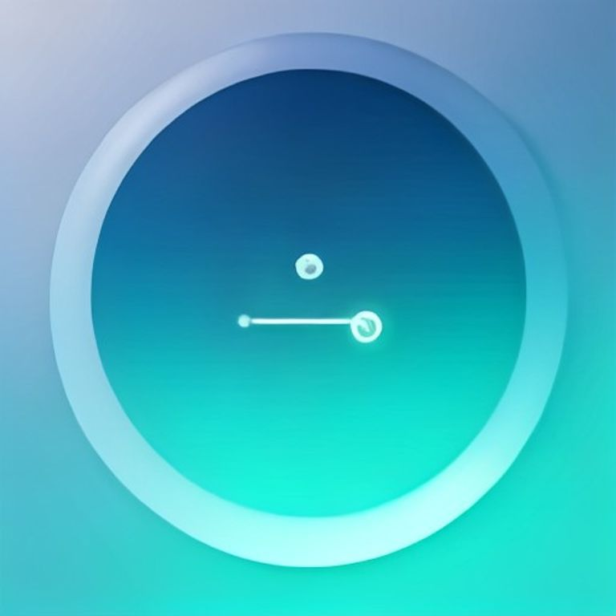

Generations — ChatGPT Ads 20aug26

chatgpt-ads-logo-light_77_1024.webp — minimalist chat bubble logo with sparkle, emerald teal gradient, light background (sana, seed 77)
chatgpt-ads-icon-512_77_512.webp — 512px app icon
chatgpt-ads-icon-192_77_192.webp — 192px favicon